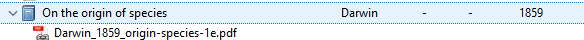
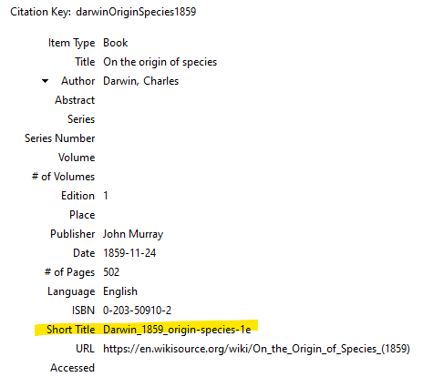
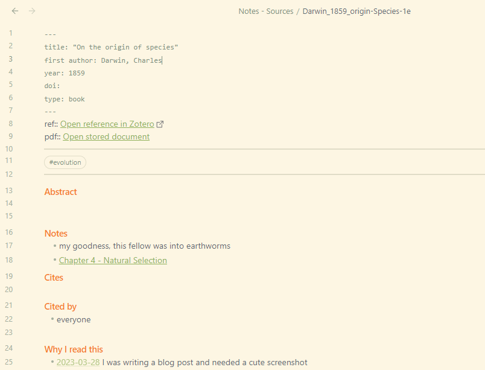
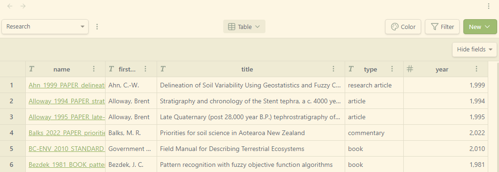
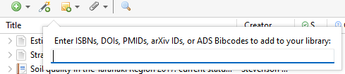

Research Notes Setup 2023
![]()
Background
I’ve seen a few posts and videos lately1 about how various people manage the avalanche of technical literature coming their way2. There are many helpful tips available in those posts, but nothing quite fit my own situation and needs end-to-end. So: this post is about how I currently manage a natural resource science-heavy reference library and associated knowledge generation infrastructure.
To be clear, I don’t necessarily love this setup. Its the best I’ve managed so far though, so hopefully writing about what works and what could be better will be inspirational.
Requirements
I am:
- a translational research worker with high anxiety and a short attention span
I need/want:
- A setup that is compatible with my work IT environment but not dependent on it, because that is safe
- A setup that is relatively easy to upgrade and extend and generally futz around with, because that is fun.
Setup
I am currently using:
- Reference manager: Zotero, with the following extensions (‘add-ons’):
- Zotfile, for reference and source document management. Offers a one-click solution for moving a file into a designated spot and renaming it according to a given pattern.
- Better Bibtex, which assigns unique IDs to Zotero references and automates their export to a
*.bibfile that can be picked up by other software that doesn’t have close integration with Zotero.
- Notes manager: Obsidian, with the following extensions (‘community plugins’):
- Citations: picks up the
*.bibfile that Better Bibtex puts down, and allows me to generate a markdown-format literature note for each reference with a matching name, some nice metadata, and a pre-formatted space all ready for me to add my notes. - Admonition: (optional extra) makes it easy to add relative dates by e.g. typing in, e.g.
@today, which then becomes a link named after today’s date. - Projects: (optional extra) This plugin is very new, so maybe not super stable in the medium term, but I really like the ability to create table, kanban, gallery and calendar views of my notes. Its currently about as Notion or Anytype as you can get with markdown powering everything.
- Citations: picks up the
- Storage: Office 365 OneDrive. Its whatever, I get it for free through work, just about any cloud storage environment could be dropped in its place.
- Authoring: Sometimes Obsidian, sometimes Quarto in RStudio, sometimes even (gasp) MS Word. The important part is that only Word and RStudio have full Zotero integration; other apps have to interact with it via the aforementioned
*.bibfile.
Zotero
I’ve installed Zotero the usual way on a Windows machine. I have then added Zotfile, and set up my preferences as follows:
- General Settings > Location of Files: I have chosen ‘Custom Location’, and instructed it to place any new linked file attachments in a particular folder in my OneDrive. I will call it ✨The Hoard✨ going forward. The only important thing about ✨The Hoard✨ is that it lives inside an Obsidian Vault. A Vault is just another folder, with some extra bits inside.
- Renaming Rules: This determines what the names of linked file attachments look like once they’re moved into ✨The Hoard✨. I use the template
{%a}_{%y}_{%t}, which is first author surname, year, title, separated by underscores. I have also ticked “change to lower case”, “truncate title after . or : or ?”3 , set “maximum length of title” to 160, and maximum number of authors to 1. As such most of my linked files start out looking like, e.g. “darwin_1859_on_the_origin_of_species.pdf”.- I can’t leave well enough alone, so I tend to do a bit more manual tweaking 🙄. I add an “item type” slug like
_PAPER_or_THESIS_, I remove filler words like ‘and’, ‘the’ and ‘novel’ from the title, and I change underscores in titles to dashes, after Jenny Bryan’s advice. They come out looking a bit like, e.g. “Darwin_1859_BOOK_origin-species-1e.pdf”. I do this because I want ✨The Hoard✨ to be navigable on its own.
- I can’t leave well enough alone, so I tend to do a bit more manual tweaking 🙄. I add an “item type” slug like
Maximum length of title becomes important if you use cloud storage. OneDrive’s maximum path length is 400 characters and some client software makes a fuss past 260 characters, so if your Hoard folder is nested deeply you have less to work with.
- Advanced Settings: I expanded the ‘Only work with the following filetypes’ option to cover some extra attachment file types I often use, e.g. MS Office formats, common image formats, ebooks, markdown, html and zip files. If you don’t do this, automated move-and-rename won’t work properly.
This option seems to mostly exist to protect against unintended consequences from enabling another setting in General Options - ‘source folder for attaching new files’ grabs the most recently modified file in a nominated folder. This seems like more trouble than its worth, so if you actually use it, please explain…
Continuing, I have added Better Bibtex, and left all the defaults except:
- Automatic export: “When Idle”, delayed for 60 seconds. This is a compromise; I work with a lot of grey literature and other Old Stuff that has to be manually entered into Zotero. The default setting was fast enough that I was running into freeze-ups and sync errors because I was still editing a reference while BB was trying to re-export my whole library. Waiting longer means I sometimes have to manually trigger an export to make a new reference available outside Zotero.
- The plugin is instructed to export my library to a
*.bibfile in Better Bibtex format that sits in the same folder as ✨The Hoard✨.
Other Zotero add-ons
These aren’t important, but they are nice.
- Zutilo - allows mass editing of reference item tags and attachment paths
- Scite - scite.ai integration - citation records with context! I like what they’re doing. The service is still a bit incomplete in my main research fields, but improving all the time. One day I’ll convince my work to pay for it…
- Word integration - eh, why wouldn’t you?
- Mdnotes - not actually using this at the moment, but if you have a lot of notes already in Zotero and you want to move them into Obsidian, it would be very helpful.
Obsidian
I have installed the software and set up a vault in my OneDrive called, imaginatively, Work_Stuff.
You may have to pay for a commercial license to use Obsidian. I’m not currently as I don’t qualify according to the EULA (NZ Crown Research Institutes are a weird public/private monstrosity, but fundamentally I’m employed as a non-profit government researcher). You may or may not have to depending on your circumstances, look into it and do the right thing.
✨The Hoard✨ lives in a subfolder of Work_Stuff, as mentioned.
I have then installed the Citations community plugin, with the following settings:
- Citation database format: BibLatex
- Citation database path: points at the
*.bibfile exported from Zotero by BB. - Literature Note folder: do what you want here. I started a specific
Notes - sourcesfolder inside the Vault (at the same level as ✨The Hoard✨). You can get more specific and organise by project, or just store your notes in a big pile in the vault’s root directory if you’re a filthy zoomer who doesn’t understand file systems, I’m not judging4.
Literature Notes template
My templating choices are a little off-label, and this is where things get brittle. The key is that I use the ‘Short Title’ field in Zotero to store the name of the file attachment I want to write about, sans file extension5. This means I can do two things: generate a note with a title that matches its source, and link to the source within the note template. In the main Zotero panel, an entry for Darwin (1859) might look like

and in the item details:

Now, in the Citations plugin settings,
Literature note title template:
{{titleShort}}Literature note content template:
title: "{{title}}" first author: {{entry.data.creators.author.[0].lastName}}, {{entry.data.creators.author.[0].firstName}} year: {{year}} doi: {{DOI}} type: {{entry.type}} --- ref::[Open reference in Zotero]({{zoteroSelectURI}}) pdf::[[{{titleShort}}.pdf|Open stored document]] *** *** ## Abstract {{abstract}} ## Notes ## Cites ## Cited by ## Why I read this
The double quotes around {{title}} stop the metadata breaking if you have any YAML-reserved characters in the article title, like :.
I put tags in between the two *** rows, which render as a horizontal line in reading view.
Example:

You’ll note the ‘ref’ and ‘pdf’ rows use some syntax from the Obsidian Dataview plugin. This is a bit of future-proofing in case I get into using that extension - no immediate plans.
I didn’t originally have a ‘why I read this’ line in the template, but I’ve found that useful for adding context to my notes. A lot of my sources have multiple potential applications so its become worth noting what I cared about each time I accessed them. This also helps me avoid falling down a rabbit-hole of chasing interesting facts when I don’t have time - I can add a ‘come back to this’ tag and just let it go otherwise, no pressure.
Projects plugin
I set up a Project over my Notes - sources folder, with a Table view. I pull in a few metadata fields that make finding things easy - note filename, first author, title, article type, year. At present there’s no proper date handling so year just looks like a large number, but it still works for sort/filter. An extra nice thing about Projects is that it forces me to make sure my note metadata is actually correctly populated and formatted6.

Workflow example
I find a reference I want to collect, and maybe even read. Delightful! I rub my little hands together gleefully and prepare to add it to Zotero. If its a new reference it’ll generally have a DOI, which is the best of all possible worlds. I click the ‘magic wand’ icon in Zotero, paste in the DOI, and the reference appears in my collection.

If a full-text PDF is freely available and scrapeable, Zotero finds and downloads it for me. There’s a right-click > ‘Find available PDF’ option that may need to be triggered. If that doesn’t work, I do my best to find that fulltext myself7, and use Zotfile’s context menu to add it as an attachment and automatically rename it and move it to ✨The Hoard✨. I do my little extra tidying steps, and that’s that.
For older references, I add in the details and attach, move and rename files manually.
Once I want to start reading and taking notes, I move to Obsidian and use ctrl+shift+o to open the Citations dialog box, search and select the reference I want, and click to create a new note. The note appears, ready with basic metadata, places to add text and tags, and working links back to a) the Zotero entry itself and b) the source document. I can open the source document in Obsidian by using ctrl+click on the PDF link, and can pin it in the app alongside my notes page, letting me read and write easily.
Why don’t I…?
Take notes in Zotero? I used to, but it has very limited capability for cross-linking between notes, so no real capacity for generating syntheses. I like to do things like build literature timelines, and Obsidian is simply a better place for this. Zotero’s notes attachments are handy for a few things like meta notes I don’t want to share (“this paper sucks!”) or PDF TOC exports, but otherwise I don’t find them useful.
Use Zotero’s ‘Attach Stored Copy’ functionality? Because then I can’t easily get at the document except by using Zotero, and often I just want to find a source quickly and e.g. email it to someone. Stored copies on Windows wind up in
\\Users\%USERNAME%\Zotero\storage\%RANDOMFOLDER%, where%RANDOMFOLDER%is an alphanumeric internally associated with the reference entry, making them poorly discoverable.Annotate PDFs and export? Basically I don’t remember anything I highlight, that’s just pretty colours. I have to rewrite things in my own words to take them in properly. I also work with a lot of old, bad PDF scans with crappy OCR or none at all, so it can be frustrating to even try. People who lean on a PDF-annotation workflow seem to never have to access anything older than 5-10 years, and that makes me equal parts jealous and suspicious.
Things I like
- I’m actually using this, instead of setting it up and then ignoring it!
- I’m actually using this, instead of setting it up and then endlessly trying to optimise it!
- If I don’t use this for a few weeks, its not impossible to remember how everything works together.
- Within notes I can add additional links to specific pages in the source pdf, using syntax like
[[Darwin_1859_origin-Species-1e.pdf#page=112|Chapter 4 - Natural Selection]]. This is fabulous. - I can also do (as needed) a bunch of other stuff like add stored images, paste in screenshots, attach/link to other files and other notes, embed maps, and add other kinds of rich content like youtube videos to my notes.
- I can link all this stuff to my ‘daily notes’ diary setup, also in Obsidian, and do some productivity/focus tracking and task management - a topic for another time8.
Things I don’t like
- OneDrive has to be running and logged in properly before interacting with the other software, otherwise things won’t sync correctly.
- I have to be careful to update Obsidian, Zotero, and the necessary plugins on both my home and work machines. I also need to close Obsidian before moving from one physical device to another to prevent sync issues.
- My use of the ‘Short Title’ field in Zotero is decidedly off-label and may cause problems in the long term. I also have to populate it manually before starting a new note, so adding a new reference takes longer.
- Re-addressing all the linked file attachments after moving ✨The Hoard✨ seems to be a high-risk operation; somehow I didn’t quite get it right the first time I moved it inside my Vault and have been slowly repairing links in Zotero ever since 😕 At least my naming convention makes things easy.
- Obsidian’s table support sucks, because tables suck when implemented in any plaintext format. I need and love tables. I don’t see an immediate solution for this. I’d at least be happy if I could reliably copy+paste markdown table data between different apps, but that’s not a thing right now.
- Zotero is annoying in some ways. Despite being definitely overall best in show for referencing:
- it lacks specific reference types for some things that really should be handled better, like datasets, databases, and preprints
- It only enables the DOI field on a few item types, but people will whack a DOI on anything these days. I don’t like having to store it in the ‘extra’ field!
- The Windows GUI has a number of non-critical but highly irritating bugs, like laggy tabbing between fields.
- Mass editing capability isn’t quite there yet. I’d like to do some clean-up and consistency work, but that’s not easy right now.
- The help forum has that clueless-newb vs hostile-oldtimer vibe so common to software and programming support. Its pretty mild compared to a lot of places, but still tiresome.
- The ‘linked files’ approach is good for me but maybe not optimal for sharing with colleagues…but I can still potentially extend read access to ✨The Hoard✨over OneDrive and they can import the
*.bibfile as needed - there’s just no auto-sync. I haven’t tried this yet - there would certainly be some issues around integrating with their existing reference library that I don’t want to have to debug. - Exporting notes in a normie-friendly format is a problem. Most of my colleagues don’t use Obsidian or markdown. I’ve said it before, but some kind of Quarto-based Obsidian-alike would be amazing, then I could throw html files or PDFs at them all day.
Anyway, that’s that on that.
References
Footnotes
search ‘obsidian zotero’, you’ll be occupied for a while↩︎
Like, technically, not emotionally.↩︎
Nothing good ever happens after that point.↩︎
Yes, I am.↩︎
It doesn’t seem to be used for anything else, near as I can tell, but that’s not future-proof.↩︎
The trick going forward will be to not accidentally rebuild Zotero in Obsidian.↩︎
IYKNK↩︎
No promises.↩︎
Citation
@unpublished{o'brien2023,
author = {O’Brien, Lauren},
title = {Research {Notes} {Setup} 2023},
date = {2023-03-28},
url = {https://obrl-soil.github.io/posts/2023-03-28_obsidian-setup-2023},
langid = {en}
}